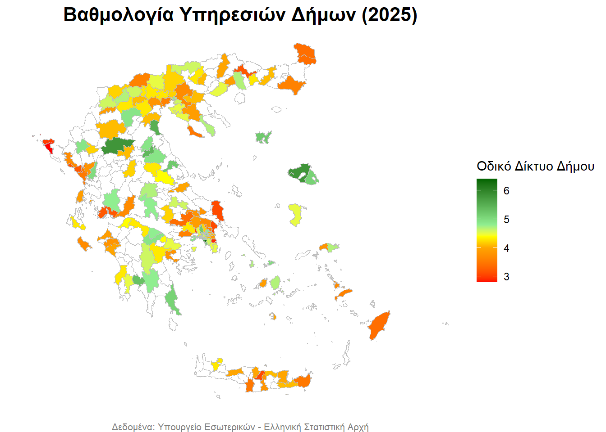
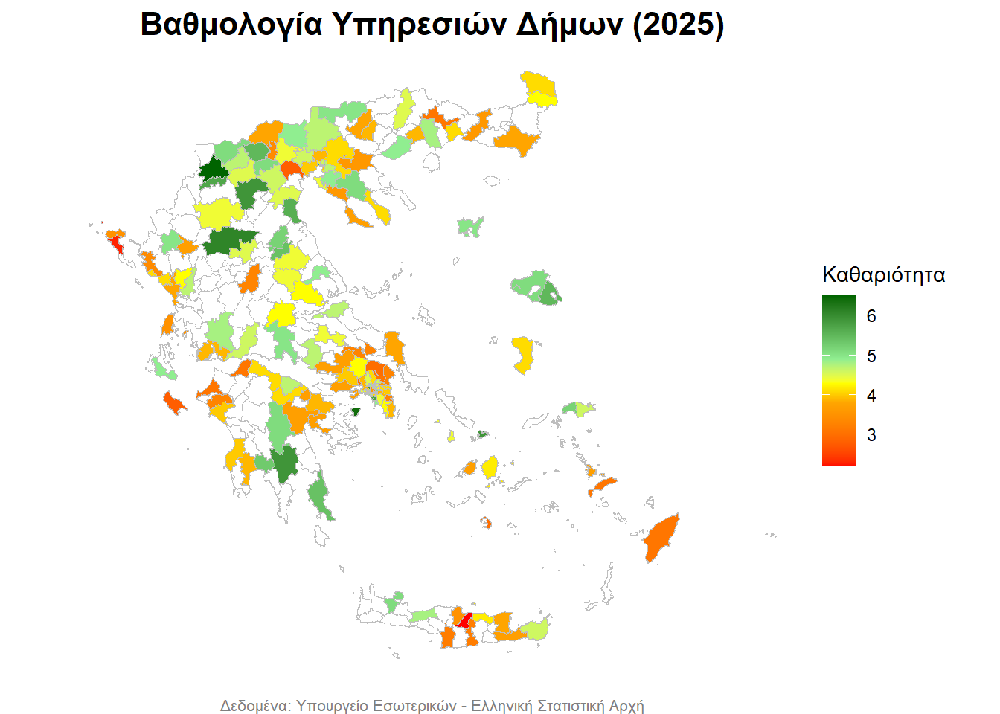
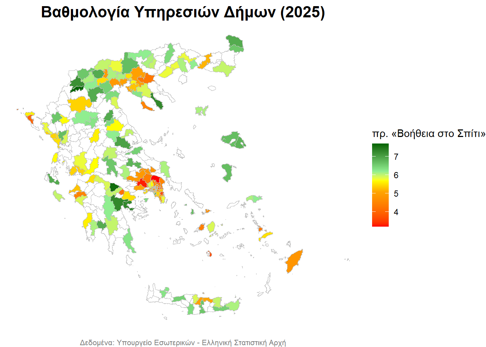
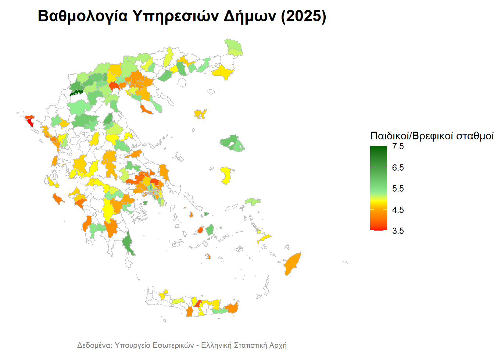
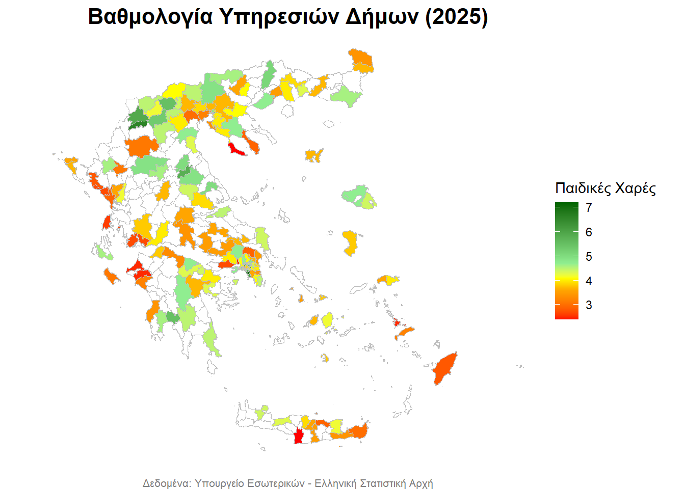
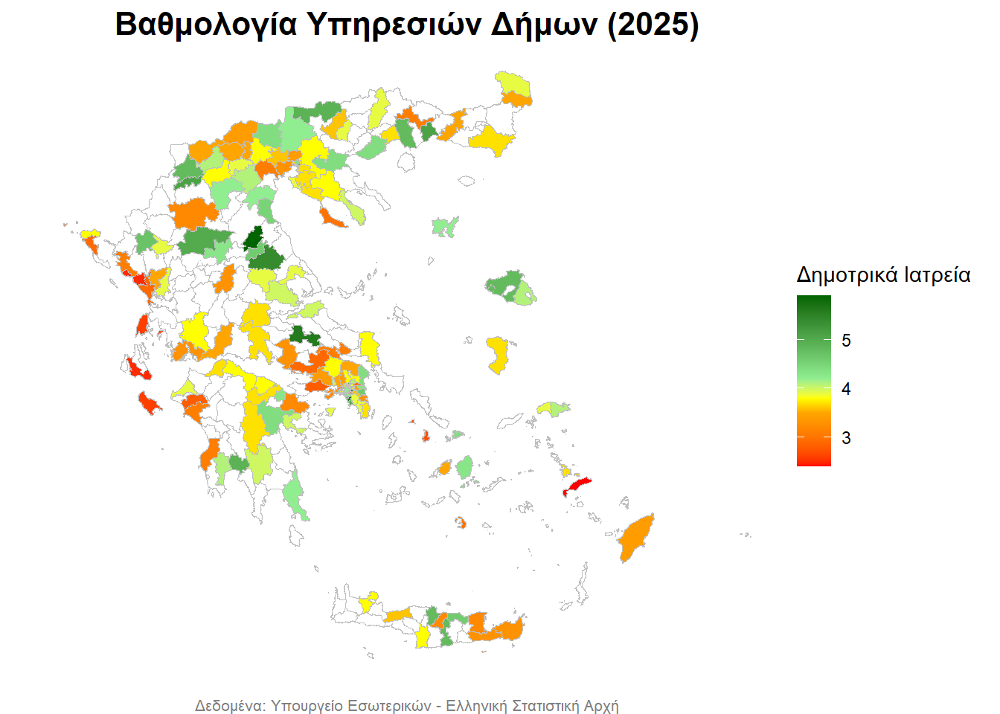
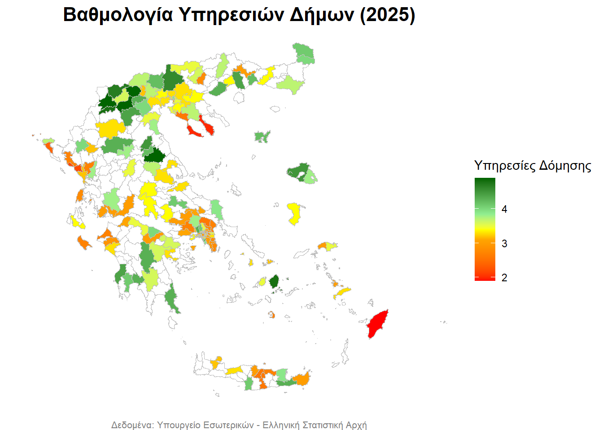
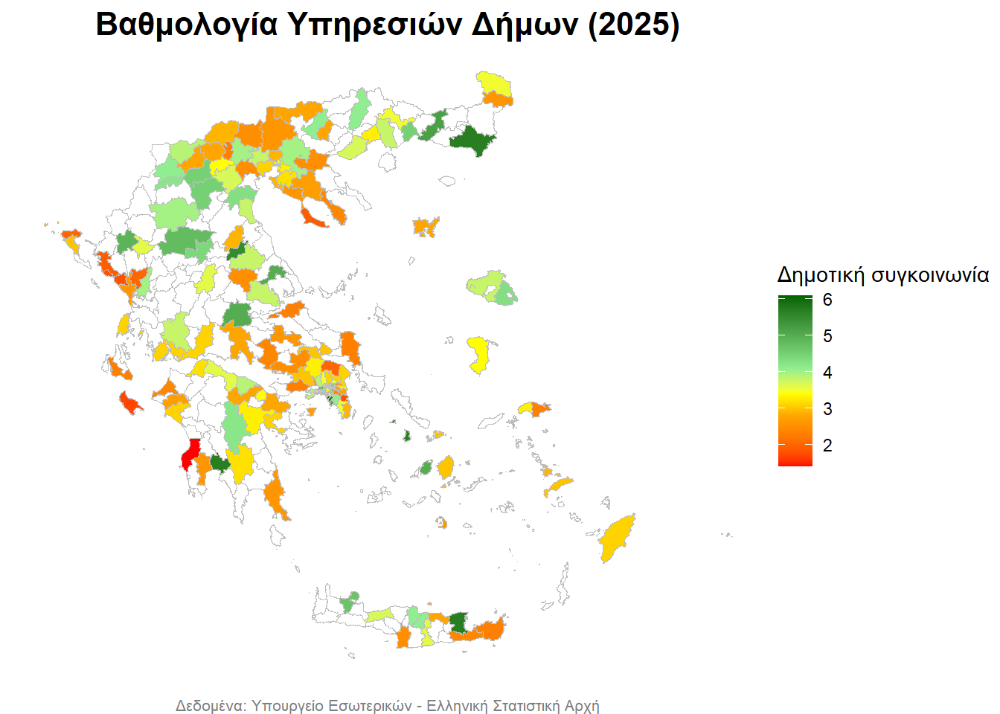
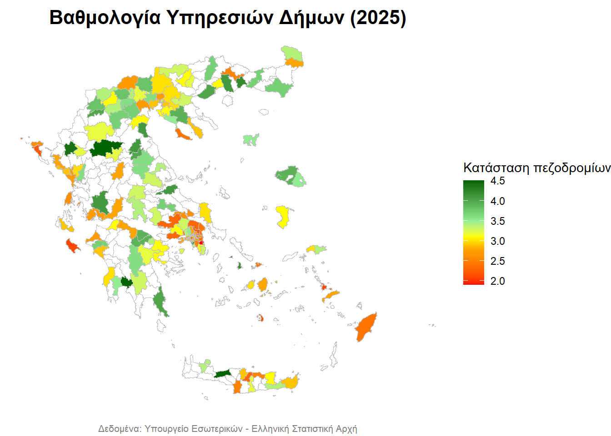
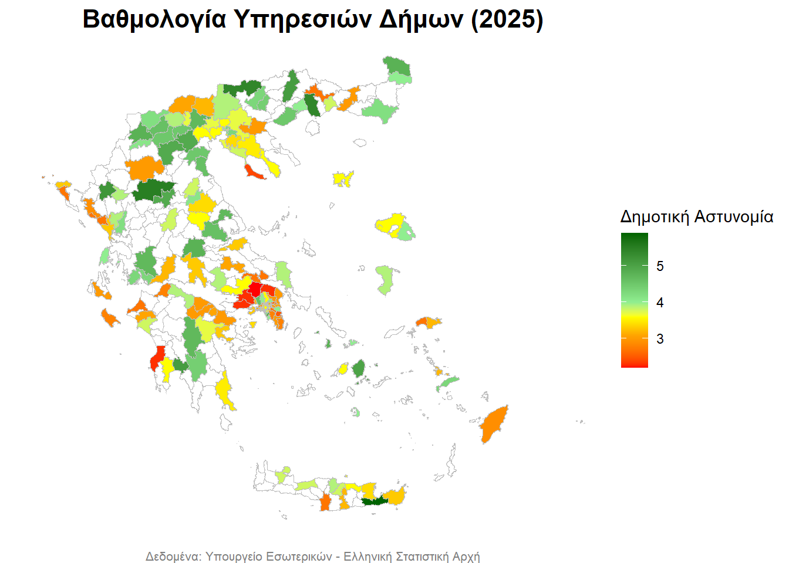

Βαθμολογία Υπηρεσιών Δήμων (2025)
1 Παρουσίαση δεδομένων
Στην παρούσα σελίδα παρουσιάζεται εποπτικά μέρος των αποτελεσμάτων μιας έρευνας αξιολόγησης των δημόσιων υπηρεσιών που διεξήχθη δημοσκοπικά από το Υπουργείο Εσωτερικών τον Μάιο του 2025 (βλ. εδώ). Οι ερωτηθέντες αξιολόγησαν με έναν βαθμό από το 0 (χάλια) έως το 10 (άριστα) τις διάφορες υπηρεσίες του Δήμου. Παρουσιάζουμε αρχικά σε μορφή πίνακα τα αποτελέσματα.
| Δήμος | ΨΗΦΙΑΚΕΣ_ΥΠΗΡΕΣΙΕΣ | ΟΔΙΚΟ_ΔΙΚΤΥΟ | ΚΑΘΑΡΙΟΤΗΤΑ | ΗΛΕΚΤΡΟΦΩΤΙΣΜΟΣ | ΚΟΙΝΩΝΙΚΕΣ_ΥΠΗΡΕΣΙΕΣ | ΚΑΠΗ | πρ.ΒΟΗΘΕΙΑστοΣΠΙΤΙ | ΥΠΟΔΟΜΕΣ_ΣΧΟΛΙΚΩΝ_ΚΤΗΡΙΩΝ | ΠΑΙΔΙΚΟΙ_ΣΤΑΘΜΟΙ | ΠΑΡΚΑ | ΠΑΙΔΙΚΕΣ_ΧΑΡΕΣ | ΧΩΡΟΙ_ΣΤΑΘΜΕΥΣΗΣ | ΔΗΜΟΤΙΚΑ_ΙΑΤΡΕΙΑ | ΑΝΑΚΥΚΛΩΣΗ_ΑΠΟΡΡΙΜΜΑΤΩΝ | ΠΟΛΕΟΔΟΜΙΕΣ | ΔΗΜΟΤΙΚΗ_ΣΥΓΚΟΙΝΩΝΙΑ | ΚΑΤΑΣΤΑΣΗ_ΠΕΖΟΔΡΟΜΙΩΝ | ΥΠΟΔΟΜΕΣ_ΑμεΑ | ΚΕΠ | ΔΗΜΟΤΙΚΗ_ΑΣΤΥΝΟΜΙΑ | ΔΙΑΧΕΙΡΙΣΗ_ΑΔΕΣΠΟΤΩΝ |
|---|---|---|---|---|---|---|---|---|---|---|---|---|---|---|---|---|---|---|---|---|---|
| ΔΗΜΟΣ ΑΒΔΗΡΩΝ | 4.9 | 4.3 | 4.1 | 4.8 | 5.4 | 5.8 | 6.2 | 5.1 | 5.4 | 4.1 | 4.3 | 3.8 | 5.1 | 4.8 | 4.2 | 4.5 | 4.2 | 4.0 | 6.2 | 3.8 | 3.2 |
| ΔΗΜΟΣ ΑΓΙΑΣ ΒΑΡΒΑΡΑΣ | 5.2 | 5.3 | 5.1 | 5.5 | 5.3 | 6.8 | 7.2 | 5.3 | 6.0 | 5.2 | 5.0 | 3.3 | 4.3 | 4.9 | 4.0 | 3.8 | 3.9 | 4.0 | 6.6 | 3.2 | 4.1 |
| ΔΗΜΟΣ ΑΓΙΑΣ ΠΑΡΑΣΚΕΥΗΣ | 4.4 | 4.7 | 4.3 | 5.0 | 4.7 | 5.6 | 5.0 | 4.3 | 4.8 | 4.4 | 4.6 | 2.8 | 3.8 | 4.3 | 3.1 | 3.0 | 2.7 | 2.7 | 5.9 | 2.9 | 3.4 |
| ΔΗΜΟΣ ΑΓΙΟΥ ΔΗΜΗΤΡΙΟΥ | 4.8 | 4.9 | 4.6 | 5.5 | 4.9 | 5.9 | 5.3 | 4.5 | 5.1 | 4.2 | 4.7 | 3.0 | 4.4 | 4.4 | 3.3 | 4.4 | 3.0 | 3.2 | 6.1 | 3.9 | 4.0 |
| ΔΗΜΟΣ ΑΓΙΟΥ ΝΙΚΟΛΑΟΥ | 4.0 | 4.0 | 3.8 | 3.9 | 5.1 | 5.9 | 6.0 | 4.2 | 4.8 | 3.8 | 4.2 | 2.8 | 3.2 | 3.4 | 3.9 | 5.7 | 3.1 | 3.0 | 5.4 | 3.4 | 2.9 |
| ΔΗΜΟΣ ΑΓΙΩΝ ΑΝΑΡΓΥΡΩΝ - ΚΑΜΑΤΕΡΟΥ | 5.2 | 5.1 | 4.9 | 5.8 | 5.0 | 5.9 | 5.7 | 4.5 | 4.9 | 4.8 | 4.7 | 3.7 | 3.8 | 4.7 | 3.5 | 3.3 | 3.7 | 3.6 | 6.4 | 3.7 | 4.2 |
| ΔΗΜΟΣ ΑΓΡΙΝΙΟΥ | 4.6 | 4.8 | 4.8 | 5.7 | 5.3 | 5.4 | 5.8 | 4.4 | 4.7 | 4.2 | 3.8 | 3.5 | 3.8 | 4.3 | 3.8 | 3.8 | 4.1 | 3.9 | 6.0 | 4.7 | 3.0 |
| ΔΗΜΟΣ ΑΘΗΝΑΙΩΝ | 4.9 | 4.6 | 3.6 | 4.9 | 4.3 | 5.1 | 4.8 | 3.9 | 4.2 | 3.8 | 3.9 | 2.4 | 4.2 | 3.8 | 3.0 | 3.3 | 2.4 | 2.6 | 5.9 | 3.6 | 3.3 |
| ΔΗΜΟΣ ΑΙΓΑΛΕΩ | 4.6 | 4.7 | 4.2 | 5.3 | 5.0 | 6.0 | 5.3 | 3.7 | 4.3 | 4.0 | 3.5 | 2.6 | 3.9 | 4.2 | 3.5 | 4.2 | 2.9 | 3.0 | 6.3 | 3.7 | 3.3 |
| ΔΗΜΟΣ ΑΙΓΙΑΛΕΙΑΣ | 4.3 | 4.3 | 4.1 | 4.1 | 4.1 | 5.1 | 5.9 | 4.6 | 4.9 | 3.6 | 3.3 | 3.4 | 3.8 | 4.2 | 3.5 | 3.6 | 2.8 | 3.0 | 5.8 | 3.9 | 4.5 |
| ΔΗΜΟΣ ΑΙΓΙΝΑΣ | 4.3 | 4.5 | 6.4 | 5.4 | 5.0 | 3.4 | 6.4 | 5.4 | 6.3 | 4.7 | 4.4 | 3.1 | 3.9 | 4.6 | 3.1 | 2.7 | 3.2 | 3.2 | 7.3 | 3.4 | 4.0 |
| ΔΗΜΟΣ ΑΛΕΞΑΝΔΡΕΙΑΣ | 3.1 | 3.8 | 2.8 | 4.2 | 4.0 | 4.3 | 4.9 | 3.7 | 3.8 | 2.8 | 3.0 | 2.7 | 3.1 | 2.2 | 3.3 | 2.5 | 2.7 | 2.6 | 5.9 | 3.6 | 1.7 |
| ΔΗΜΟΣ ΑΛΕΞΑΝΔΡΟΥΠΟΛΗΣ | 4.2 | 3.6 | 3.8 | 5.2 | 4.5 | 5.0 | 6.0 | 4.6 | 4.8 | 4.3 | 4.6 | 2.3 | 3.7 | 3.9 | 3.7 | 5.7 | 3.7 | 4.2 | 6.8 | 4.2 | 3.1 |
| ΔΗΜΟΣ ΑΛΙΜΟΥ | 5.8 | 5.6 | 6.1 | 6.9 | 6.7 | 7.2 | 5.9 | 5.2 | 5.8 | 5.7 | 6.3 | 4.0 | 4.2 | 5.9 | 3.8 | 5.9 | 3.9 | 4.4 | 7.0 | 4.1 | 5.5 |
| ΔΗΜΟΣ ΑΛΜΥΡΟΥ | 4.1 | 4.4 | 4.3 | 4.6 | 5.4 | 3.2 | 7.0 | 4.2 | 5.5 | 4.3 | 3.9 | 4.3 | 4.0 | 2.9 | 3.3 | 3.8 | 3.3 | 3.0 | 6.2 | 4.6 | 1.9 |
| ΔΗΜΟΣ ΑΛΜΩΠΙΑΣ | 3.8 | 3.6 | 3.8 | 4.3 | 3.6 | 4.0 | 6.0 | 4.9 | 5.2 | 3.7 | 4.1 | 2.5 | 3.4 | 2.8 | 3.7 | 2.9 | 2.7 | 2.7 | 6.9 | 3.1 | 4.0 |
| ΔΗΜΟΣ ΑΜΑΡΟΥΣΙΟΥ | 4.5 | 4.8 | 4.5 | 5.2 | 5.1 | 5.9 | 4.9 | 4.4 | 5.0 | 4.5 | 4.7 | 3.0 | 3.8 | 4.5 | 3.1 | 4.6 | 2.7 | 2.6 | 6.1 | 3.1 | 3.4 |
| ΔΗΜΟΣ ΑΜΠΕΛΟΚΗΠΩΝ - ΜΕΝΕΜΕΝΗΣ | 5.1 | 5.7 | 5.7 | 6.0 | 5.6 | 6.6 | 5.7 | 5.5 | 5.7 | 4.6 | 4.7 | 3.3 | 4.8 | 5.4 | 4.2 | 4.3 | 4.0 | 4.1 | 6.9 | 4.4 | 3.4 |
| ΔΗΜΟΣ ΑΜΥΝΤΑΙΟΥ | 4.9 | 4.7 | 4.7 | 5.0 | 5.0 | 5.2 | 6.1 | 5.1 | 5.9 | 4.2 | 4.2 | 3.9 | 4.1 | 4.8 | 3.6 | 2.8 | 3.1 | 3.9 | 6.8 | 4.6 | 3.5 |
| ΔΗΜΟΣ ΑΝΑΤΟΛΙΚΗΣ ΣΑΜΟΥ | 4.1 | 4.7 | 4.6 | 5.2 | 5.1 | 5.4 | 6.2 | 4.5 | 5.2 | 4.4 | 4.0 | 3.5 | 4.1 | 3.2 | 3.5 | 2.3 | 3.4 | 3.0 | 6.7 | 3.2 | 3.6 |
| ΔΗΜΟΣ ΑΝΔΡΑΒΙΔΑΣ - ΚΥΛΛΗΝΗΣ | 3.6 | 3.9 | 3.1 | 3.6 | 3.3 | 5.0 | 5.3 | 4.2 | 4.7 | 2.8 | 2.5 | 3.0 | 3.9 | 3.7 | 2.7 | 2.4 | 2.7 | 2.5 | 5.9 | 2.7 | 1.7 |
| ΔΗΜΟΣ ΑΡΓΟΣΤΟΛΙΟΥ | 4.5 | 4.3 | 4.9 | 5.2 | 5.0 | 7.4 | 6.9 | 4.3 | 4.8 | 4.3 | 4.6 | 2.3 | 2.5 | 3.6 | 3.4 | 2.3 | 2.9 | 3.6 | 6.8 | 3.0 | 2.9 |
| ΔΗΜΟΣ ΑΡΓΟΥΣ - ΜΥΚΗΝΩΝ | 4.3 | 4.3 | 3.7 | 4.8 | 4.0 | 5.2 | 7.3 | 4.3 | 4.5 | 3.7 | 3.7 | 3.2 | 4.4 | 4.0 | 3.6 | 3.3 | 3.2 | 3.2 | 6.7 | 3.7 | 2.4 |
| ΔΗΜΟΣ ΑΡΓΟΥΣ ΟΡΕΣΤΙΚΟΥ | 4.8 | 3.9 | 5.7 | 6.5 | 5.9 | 5.6 | 7.7 | 7.3 | 7.5 | 6.3 | 6.6 | 4.7 | 5.1 | 5.8 | 4.8 | 4.2 | 4.0 | 3.8 | 8.1 | 4.1 | 3.2 |
| ΔΗΜΟΣ ΑΡΤΑΙΩΝ | 4.6 | 5.0 | 4.7 | 5.3 | 5.3 | 5.3 | 5.9 | 4.5 | 5.2 | 4.6 | 4.2 | 3.7 | 3.9 | 4.8 | 3.8 | 4.0 | 3.6 | 3.6 | 6.4 | 4.2 | 3.3 |
| ΔΗΜΟΣ ΑΡΧΑΝΩΝ - ΑΣΤΕΡΟΥΣΙΩΝ | 3.8 | 3.8 | 3.2 | 3.7 | 4.5 | 6.0 | 6.6 | 4.5 | 4.9 | 3.2 | 3.5 | 2.3 | 4.8 | 3.7 | 2.6 | 3.6 | 3.2 | 3.2 | 6.4 | 3.2 | 2.3 |
| ΔΗΜΟΣ ΑΣΠΡΟΠΥΡΓΟΥ | 4.7 | 4.5 | 3.9 | 4.9 | 5.1 | 6.3 | 5.9 | 4.2 | 5.4 | 4.3 | 4.1 | 3.2 | 3.5 | 3.7 | 4.3 | 3.9 | 3.4 | 2.9 | 6.4 | 4.6 | 3.1 |
| ΔΗΜΟΣ ΑΧΑΡΝΩΝ | 4.3 | 4.2 | 4.1 | 5.1 | 4.5 | 5.2 | 4.6 | 4.3 | 4.8 | 3.9 | 4.1 | 3.4 | 3.8 | 4.1 | 3.5 | 3.1 | 2.8 | 2.7 | 6.0 | 3.6 | 3.3 |
| ΔΗΜΟΣ ΒΑΡΗΣ - ΒΟΥΛΑΣ - ΒΟΥΛΙΑΓΜΕΝΗΣ | 5.4 | 5.2 | 4.9 | 5.9 | 5.4 | 6.3 | 5.3 | 5.1 | 5.8 | 5.5 | 6.0 | 4.1 | 5.0 | 5.2 | 3.9 | 5.0 | 3.3 | 3.6 | 6.8 | 4.0 | 4.1 |
| ΔΗΜΟΣ ΒΕΛΟΥ - ΒΟΧΑΣ | 3.7 | 4.4 | 3.7 | 5.7 | 4.5 | 5.4 | 4.2 | 4.9 | 5.3 | 4.1 | 4.4 | 4.5 | 4.3 | 3.7 | 3.6 | 3.4 | 3.4 | 3.2 | 7.1 | 3.1 | 2.0 |
| ΔΗΜΟΣ ΒΕΡΟΙΑΣ | 4.8 | 4.3 | 4.6 | 5.0 | 5.7 | 6.0 | 6.5 | 4.5 | 5.2 | 4.4 | 4.0 | 2.8 | 4.1 | 4.1 | 4.0 | 3.7 | 3.7 | 3.7 | 6.5 | 4.9 | 2.9 |
| ΔΗΜΟΣ ΒΟΛΒΗΣ | 4.0 | 4.1 | 3.6 | 4.0 | 3.4 | 4.3 | 4.3 | 4.5 | 4.5 | 4.2 | 4.1 | 4.3 | 4.4 | 3.6 | 3.4 | 2.5 | 3.3 | 3.3 | 6.3 | 3.0 | 2.7 |
| ΔΗΜΟΣ ΒΟΛΟΥ | 5.1 | 5.2 | 4.9 | 6.1 | 5.6 | 5.7 | 6.0 | 4.4 | 4.9 | 4.6 | 5.0 | 3.8 | 3.9 | 4.5 | 3.3 | 5.0 | 3.4 | 3.5 | 6.5 | 4.7 | 2.8 |
| ΔΗΜΟΣ ΒΟΡΕΙΑΣ ΚΕΡΚΥΡΑΣ | 3.2 | 3.0 | 3.5 | 3.3 | 4.2 | 3.8 | 5.6 | 3.6 | 3.8 | 3.4 | 3.6 | 3.1 | 3.8 | 3.8 | 3.7 | 2.0 | 2.6 | 2.4 | 5.3 | 3.3 | 2.6 |
| ΔΗΜΟΣ ΒΡΙΛΗΣΣΙΩΝ | 4.9 | 4.8 | 5.3 | 5.7 | 5.7 | 6.0 | 5.4 | 4.7 | 5.4 | 5.6 | 5.6 | 3.6 | 4.6 | 5.3 | 3.2 | 3.5 | 3.2 | 3.3 | 6.3 | 3.4 | 4.0 |
| ΔΗΜΟΣ ΒΥΡΩΝΟΣ | 4.5 | 4.7 | 4.1 | 5.3 | 5.4 | 5.9 | 5.6 | 4.3 | 4.9 | 4.2 | 4.3 | 2.6 | 4.9 | 4.8 | 3.6 | 3.9 | 2.8 | 2.9 | 6.3 | 3.5 | 4.2 |
| ΔΗΜΟΣ ΓΑΛΑΤΣΙΟΥ | 5.2 | 5.5 | 5.3 | 5.5 | 5.4 | 6.0 | 5.5 | 4.6 | 5.2 | 5.1 | 5.2 | 3.2 | 3.6 | 4.5 | 3.6 | 4.1 | 3.2 | 3.2 | 6.1 | 3.1 | 3.8 |
| ΔΗΜΟΣ ΓΛΥΦΑΔΑΣ | 6.4 | 6.4 | 5.8 | 6.5 | 6.8 | 7.7 | 6.9 | 5.7 | 6.5 | 6.5 | 7.2 | 4.6 | 5.7 | 5.7 | 4.2 | 5.7 | 4.2 | 4.8 | 7.0 | 4.8 | 5.6 |
| ΔΗΜΟΣ ΓΡΕΒΕΝΩΝ | 3.5 | 4.1 | 4.4 | 4.7 | 4.2 | 4.1 | 5.4 | 5.1 | 5.3 | 4.2 | 3.1 | 2.8 | 3.2 | 4.8 | 3.3 | 4.0 | 3.2 | 3.2 | 6.3 | 3.0 | 2.2 |
| ΔΗΜΟΣ ΔΑΦΝΗΣ - ΥΜΗΤΤΟΥ | 3.9 | 4.3 | 3.1 | 4.5 | 3.8 | 5.2 | 4.9 | 3.7 | 4.1 | 3.2 | 3.5 | 2.1 | 4.0 | 3.5 | 2.8 | 2.6 | 2.9 | 2.7 | 6.2 | 2.5 | 3.0 |
| ΔΗΜΟΣ ΔΕΛΤΑ | 3.9 | 3.6 | 4.0 | 4.3 | 3.8 | 4.4 | 5.0 | 4.3 | 4.3 | 3.3 | 3.2 | 3.5 | 3.3 | 4.0 | 3.3 | 3.1 | 2.9 | 2.6 | 5.9 | 3.6 | 2.8 |
| ΔΗΜΟΣ ΔΕΛΦΩΝ | 4.3 | 4.8 | 5.0 | 4.7 | 4.8 | 6.2 | 6.6 | 4.3 | 4.6 | 3.6 | 3.4 | 3.4 | 3.7 | 4.0 | 3.4 | 2.8 | 3.4 | 2.9 | 6.9 | 3.3 | 3.2 |
| ΔΗΜΟΣ ΔΙΔΥΜΟΤΕΙΧΟΥ | 4.6 | 3.4 | 4.3 | 6.0 | 5.4 | 4.2 | 6.6 | 4.2 | 5.1 | 3.5 | 3.7 | 3.5 | 3.5 | 4.6 | 4.0 | 2.6 | 2.8 | 2.6 | 7.0 | 4.0 | 3.3 |
| ΔΗΜΟΣ ΔΙΟΝΥΣΟΥ | 3.7 | 3.6 | 3.1 | 3.7 | 4.3 | 5.1 | 4.2 | 3.9 | 4.3 | 3.6 | 3.7 | 2.9 | 3.8 | 3.5 | 2.8 | 3.1 | 2.2 | 2.0 | 6.3 | 3.0 | 2.8 |
| ΔΗΜΟΣ ΔΙΟΥ - ΟΛΥΜΠΟΥ | 4.6 | 5.5 | 5.6 | 5.8 | 4.9 | 5.8 | 5.9 | 5.1 | 5.6 | 5.1 | 4.3 | 4.5 | 4.5 | 4.5 | 3.8 | 3.8 | 4.1 | 3.9 | 5.9 | 4.6 | 4.2 |
| ΔΗΜΟΣ ΔΡΑΜΑΣ | 4.7 | 4.0 | 4.5 | 5.1 | 5.3 | 6.3 | 6.4 | 4.3 | 5.0 | 5.0 | 5.1 | 3.5 | 3.9 | 4.6 | 3.7 | 4.1 | 3.7 | 4.1 | 6.9 | 5.1 | 3.4 |
| ΔΗΜΟΣ ΔΥΤΙΚΗΣ ΛΕΣΒΟΥ | 5.6 | 5.8 | 5.1 | 5.7 | 5.9 | 5.4 | 6.7 | 5.5 | 5.9 | 4.6 | 4.7 | 4.1 | 4.8 | 5.1 | 4.5 | 3.8 | 3.9 | 3.4 | 7.2 | 3.6 | 4.0 |
| ΔΗΜΟΣ ΔΥΤΙΚΗΣ ΣΑΜΟΥ | 3.6 | 3.8 | 5.2 | 5.0 | 4.8 | 5.0 | 6.1 | 4.5 | 5.2 | 3.6 | 3.6 | 3.8 | 3.9 | 1.9 | 3.0 | 3.3 | 3.0 | 2.6 | 7.1 | 2.7 | 3.9 |
| ΔΗΜΟΣ ΕΔΕΣΣΑΣ | 4.8 | 4.6 | 5.5 | 6.0 | 5.0 | 6.5 | 6.9 | 4.9 | 5.8 | 6.0 | 5.5 | 3.3 | 3.5 | 5.1 | 4.9 | 2.8 | 3.8 | 4.0 | 6.9 | 3.9 | 3.4 |
| ΔΗΜΟΣ ΕΛΕΥΣΙΝΑΣ | 2.9 | 3.1 | 3.0 | 4.5 | 3.2 | 4.7 | 4.9 | 3.5 | 4.1 | 2.8 | 2.5 | 3.1 | 4.0 | 3.7 | 3.2 | 2.6 | 2.4 | 2.4 | 5.8 | 3.2 | 2.4 |
| ΔΗΜΟΣ ΕΛΛΗΝΙΚΟΥ - ΑΡΓΥΡΟΥΠΟΛΗΣ | 5.8 | 5.8 | 5.7 | 6.3 | 6.2 | 6.7 | 5.9 | 5.3 | 5.9 | 6.4 | 7.0 | 3.8 | 4.7 | 5.6 | 4.0 | 6.1 | 3.9 | 4.0 | 6.4 | 4.2 | 4.5 |
| ΔΗΜΟΣ ΕΜΜΑΝΟΥΗΛ ΠΑΠΠΑ | 4.2 | 4.1 | 3.9 | 4.7 | 4.9 | 5.7 | 6.0 | 4.6 | 5.4 | 3.9 | 4.1 | 3.3 | 3.9 | 3.5 | 2.8 | 2.8 | 3.2 | 3.1 | 5.5 | 4.4 | 3.1 |
| ΔΗΜΟΣ ΕΟΡΔΑΙΑΣ | 4.5 | 4.3 | 4.5 | 4.7 | 5.0 | 6.3 | 6.2 | 4.8 | 5.2 | 4.4 | 5.3 | 3.2 | 3.8 | 5.2 | 4.9 | 4.5 | 3.4 | 4.2 | 6.3 | 4.5 | 3.1 |
| ΔΗΜΟΣ ΖΑΚΥΝΘΟΥ | 3.2 | 3.7 | 2.8 | 4.1 | 4.2 | 2.7 | 6.0 | 3.4 | 4.1 | 2.8 | 3.1 | 1.7 | 2.6 | 1.8 | 2.7 | 1.7 | 2.1 | 2.1 | 6.1 | 2.8 | 2.3 |
| ΔΗΜΟΣ ΖΗΡΟΥ | 3.5 | 3.8 | 4.3 | 4.4 | 4.8 | 5.2 | 6.7 | 4.7 | 4.9 | 3.6 | 3.6 | 3.2 | 3.5 | 2.8 | 2.7 | 2.0 | 3.0 | 3.0 | 6.0 | 3.9 | 2.4 |
| ΔΗΜΟΣ ΖΙΤΣΑΣ | 4.7 | 4.9 | 5.0 | 5.2 | 5.3 | 6.9 | 6.6 | 5.4 | 5.4 | 5.1 | 4.6 | 4.3 | 4.7 | 5.4 | 4.0 | 4.9 | 4.4 | 3.7 | 7.4 | 5.2 | 3.2 |
| ΔΗΜΟΣ ΖΩΓΡΑΦΟΥ | 4.0 | 4.3 | 3.4 | 5.1 | 4.4 | 4.9 | 4.6 | 3.7 | 3.7 | 3.6 | 4.0 | 1.9 | 3.3 | 3.6 | 2.8 | 2.6 | 2.3 | 2.3 | 5.5 | 2.7 | 3.0 |
| ΔΗΜΟΣ ΗΓΟΥΜΕΝΙΤΣΑΣ | 3.6 | 3.7 | 3.4 | 4.3 | 4.4 | 5.2 | 5.8 | 4.3 | 4.6 | 3.0 | 2.8 | 2.3 | 3.1 | 2.6 | 2.7 | 1.9 | 2.8 | 2.4 | 6.0 | 2.9 | 2.1 |
| ΔΗΜΟΣ ΗΛΙΔΑΣ | 3.0 | 3.8 | 3.3 | 3.8 | 3.3 | 2.7 | 4.5 | 4.2 | 4.7 | 3.1 | 2.5 | 2.5 | 2.8 | 2.9 | 2.9 | 2.7 | 3.7 | 3.6 | 5.8 | 3.1 | 2.3 |
| ΔΗΜΟΣ ΗΛΙΟΥΠΟΛΕΩΣ | 4.7 | 4.8 | 4.1 | 4.5 | 5.0 | 5.9 | 5.3 | 4.0 | 4.8 | 4.9 | 5.6 | 3.7 | 4.2 | 4.4 | 3.4 | 3.5 | 3.0 | 3.3 | 6.3 | 3.7 | 4.3 |
| ΔΗΜΟΣ ΗΡΑΚΛΕΙΟΥ | 3.9 | 3.1 | 2.2 | 3.0 | 3.7 | 4.4 | 5.0 | 3.4 | 3.8 | 3.0 | 3.6 | 2.0 | 3.2 | 2.7 | 2.6 | 4.1 | 2.3 | 2.4 | 5.6 | 3.8 | 2.7 |
| ΔΗΜΟΣ ΗΡΑΚΛΕΙΟΥ ΑΤΤΙΚΗΣ | 4.2 | 4.4 | 4.1 | 5.0 | 4.8 | 5.8 | 5.0 | 3.7 | 4.6 | 4.2 | 4.3 | 2.8 | 3.6 | 4.2 | 3.1 | 4.3 | 2.5 | 2.6 | 6.2 | 3.1 | 3.5 |
| ΔΗΜΟΣ ΗΡΩΙΚΗΣ ΠΟΛΕΩΣ ΝΑΟΥΣΑΣ | 4.8 | 4.1 | 5.1 | 5.4 | 5.6 | 5.5 | 5.5 | 5.0 | 5.5 | 5.1 | 4.5 | 3.2 | 3.9 | 4.0 | 4.3 | 3.4 | 3.6 | 3.8 | 7.1 | 4.5 | 3.4 |
| ΔΗΜΟΣ ΘΕΡΜΑΪΚΟΥ | 4.5 | 4.5 | 4.4 | 4.8 | 5.1 | 5.4 | 5.1 | 4.6 | 4.8 | 3.9 | 3.4 | 3.6 | 3.9 | 4.5 | 3.5 | 2.9 | 3.1 | 3.3 | 6.5 | 3.7 | 2.7 |
| ΔΗΜΟΣ ΘΕΡΜΗΣ | 4.7 | 4.5 | 4.9 | 4.5 | 5.1 | 5.4 | 5.3 | 4.4 | 5.0 | 4.1 | 4.0 | 3.5 | 3.7 | 5.0 | 3.4 | 3.2 | 3.1 | 3.3 | 6.3 | 3.4 | 2.6 |
| ΔΗΜΟΣ ΘΕΣΣΑΛΟΝΙΚΗΣ | 4.9 | 4.5 | 4.0 | 5.1 | 4.5 | 5.0 | 5.1 | 4.0 | 4.2 | 3.7 | 4.0 | 2.3 | 3.7 | 4.1 | 3.1 | 3.5 | 2.9 | 3.2 | 6.1 | 4.2 | 3.0 |
| ΔΗΜΟΣ ΘΗΒΑΙΩΝ | 3.8 | 3.4 | 3.7 | 4.4 | 4.4 | 5.2 | 4.9 | 3.6 | 4.0 | 3.5 | 3.5 | 2.2 | 2.9 | 3.7 | 3.0 | 2.5 | 2.3 | 2.6 | 5.2 | 3.6 | 1.7 |
| ΔΗΜΟΣ ΘΗΡΑΣ | 3.7 | 4.0 | 3.0 | 3.4 | 3.6 | 3.8 | 3.7 | 3.2 | 4.2 | 2.4 | 3.8 | 2.5 | 3.0 | 2.7 | 2.7 | 2.6 | 2.2 | 1.9 | 5.4 | 4.0 | 2.5 |
| ΔΗΜΟΣ ΙΕΡΑΠΕΤΡΑΣ | 4.1 | 4.1 | 3.7 | 4.0 | 5.4 | 6.0 | 6.5 | 5.0 | 5.4 | 3.4 | 3.4 | 3.0 | 3.3 | 3.6 | 4.3 | 2.4 | 3.4 | 3.6 | 6.6 | 5.9 | 5.0 |
| ΔΗΜΟΣ ΙΕΡΑΣ ΠΟΛΗΣ ΜΕΣΟΛΟΓΓΙΟΥ | 3.1 | 3.2 | 3.9 | 4.3 | 4.5 | 5.6 | 5.4 | 4.3 | 4.9 | 3.5 | 2.7 | 3.1 | 3.3 | 2.5 | 3.0 | 3.1 | 2.7 | 2.5 | 6.3 | 4.3 | 2.3 |
| ΔΗΜΟΣ ΙΛΙΟΥ | 5.2 | 4.6 | 4.8 | 5.7 | 5.3 | 6.2 | 5.0 | 4.2 | 4.8 | 4.8 | 5.2 | 3.2 | 3.8 | 4.7 | 3.2 | 3.2 | 3.1 | 3.1 | 6.4 | 3.6 | 3.5 |
| ΔΗΜΟΣ ΙΣΤΙΑΙΑΣ - ΑΙΔΗΨΟΥ | 3.8 | 4.0 | 4.7 | 5.7 | 2.5 | 2.2 | 6.5 | 4.6 | 4.4 | 4.3 | 4.5 | 3.1 | 4.0 | 1.8 | 3.3 | 2.3 | 4.1 | 3.3 | 6.3 | 3.3 | 3.3 |
| ΔΗΜΟΣ ΙΩΑΝΝΙΤΩΝ | 3.9 | 4.2 | 3.7 | 4.1 | 4.8 | 5.5 | 5.7 | 4.0 | 4.7 | 3.6 | 3.1 | 2.8 | 3.9 | 4.1 | 3.2 | 3.6 | 3.2 | 3.1 | 6.5 | 3.9 | 3.0 |
| ΔΗΜΟΣ ΚΑΒΑΛΑΣ | 4.3 | 3.9 | 3.9 | 4.3 | 4.3 | 5.6 | 5.8 | 4.1 | 4.9 | 3.6 | 3.5 | 2.4 | 3.7 | 4.3 | 3.4 | 3.3 | 3.1 | 3.6 | 6.3 | 4.0 | 3.2 |
| ΔΗΜΟΣ ΚΑΙΣΑΡΙΑΝΗΣ | 4.1 | 4.3 | 4.1 | 5.1 | 4.5 | 4.9 | 4.2 | 3.8 | 4.2 | 4.4 | 3.9 | 2.3 | 3.0 | 3.8 | 2.6 | 2.5 | 2.6 | 2.8 | 5.2 | 2.5 | 2.8 |
| ΔΗΜΟΣ ΚΑΛΑΜΑΡΙΑΣ | 4.9 | 4.5 | 4.3 | 4.9 | 5.1 | 5.6 | 5.5 | 4.3 | 4.8 | 4.1 | 4.2 | 2.9 | 3.9 | 4.6 | 3.5 | 3.0 | 2.8 | 3.3 | 6.2 | 3.6 | 3.0 |
| ΔΗΜΟΣ ΚΑΛΑΜΑΤΑΣ | 5.4 | 5.3 | 5.3 | 5.9 | 5.7 | 6.8 | 6.9 | 4.9 | 5.5 | 5.7 | 5.5 | 4.2 | 4.9 | 5.8 | 4.3 | 5.7 | 4.5 | 5.1 | 6.7 | 5.1 | 4.7 |
| ΔΗΜΟΣ ΚΑΛΛΙΘΕΑΣ | 4.9 | 4.9 | 4.0 | 4.8 | 4.7 | 5.3 | 5.0 | 4.1 | 4.7 | 4.1 | 4.2 | 2.3 | 4.1 | 4.1 | 3.4 | 3.5 | 2.8 | 3.3 | 6.0 | 3.5 | 3.2 |
| ΔΗΜΟΣ ΚΑΛΥΜΝΙΩΝ | 4.1 | 3.7 | 3.7 | 4.8 | 4.1 | 3.8 | 4.3 | 4.5 | 5.0 | 2.7 | 2.5 | 2.7 | 3.7 | 1.7 | 3.0 | 2.9 | 2.1 | 2.3 | 5.9 | 3.2 | 3.6 |
| ΔΗΜΟΣ ΚΑΡΔΙΤΣΑΣ | 4.1 | 4.2 | 3.3 | 4.3 | 4.4 | 5.2 | 5.6 | 4.1 | 4.8 | 4.0 | 3.7 | 2.9 | 3.3 | 4.3 | 3.5 | 3.6 | 2.8 | 3.0 | 6.2 | 3.8 | 2.1 |
| ΔΗΜΟΣ ΚΑΣΣΑΝΔΡΑΣ | 3.2 | 3.5 | 3.7 | 3.4 | 2.8 | 2.8 | 4.5 | 3.9 | 4.1 | 2.5 | 2.4 | 2.3 | 3.0 | 3.0 | 2.0 | 1.9 | 2.4 | 2.0 | 5.9 | 2.4 | 2.2 |
| ΔΗΜΟΣ ΚΑΣΤΟΡΙΑΣ | 5.3 | 4.6 | 6.5 | 6.4 | 6.1 | 6.4 | 7.2 | 5.6 | 6.1 | 5.8 | 5.9 | 5.2 | 4.8 | 5.9 | 4.9 | 4.1 | 3.8 | 3.5 | 6.8 | 4.8 | 4.5 |
| ΔΗΜΟΣ ΚΑΤΕΡΙΝΗΣ | 4.3 | 4.1 | 4.5 | 5.1 | 4.8 | 5.9 | 6.4 | 4.4 | 5.2 | 5.1 | 4.7 | 3.3 | 4.2 | 4.5 | 3.5 | 4.3 | 3.1 | 3.4 | 6.6 | 4.5 | 4.0 |
| ΔΗΜΟΣ ΚΕΝΤΡΙΚΗΣ ΚΕΡΚΥΡΑΣ ΚΑΙ ΔΙΑΠΟΝΤΙΩΝ ΝΗΣΩΝ | 2.8 | 2.8 | 2.3 | 3.0 | 3.1 | 3.3 | 4.0 | 2.9 | 3.5 | 3.9 | 3.7 | 1.9 | 2.9 | 2.1 | 2.4 | 3.0 | 2.2 | 2.1 | 5.7 | 2.7 | 2.4 |
| ΔΗΜΟΣ ΚΕΡΑΤΣΙΝΙΟΥ - ΔΡΑΠΕΤΣΩΝΑΣ | 4.8 | 4.9 | 4.6 | 5.8 | 5.1 | 5.9 | 5.5 | 4.4 | 4.8 | 4.8 | 5.1 | 3.1 | 4.5 | 4.6 | 3.6 | 4.0 | 3.0 | 2.9 | 5.9 | 3.4 | 3.2 |
| ΔΗΜΟΣ ΚΗΦΙΣΙΑΣ | 4.8 | 4.8 | 4.6 | 5.0 | 5.2 | 6.0 | 5.1 | 4.7 | 5.1 | 5.0 | 4.8 | 3.4 | 4.1 | 4.6 | 3.1 | 3.6 | 2.8 | 2.9 | 6.7 | 4.0 | 3.7 |
| ΔΗΜΟΣ ΚΙΛΕΛΕΡ | 4.6 | 4.9 | 4.4 | 4.8 | 4.7 | 5.4 | 5.7 | 4.9 | 5.1 | 5.1 | 4.9 | 4.8 | 5.4 | 5.4 | 4.9 | 3.8 | 3.6 | 3.5 | 6.6 | 3.4 | 3.2 |
| ΔΗΜΟΣ ΚΙΛΚΙΣ | 4.4 | 4.2 | 4.7 | 5.0 | 5.1 | 5.2 | 6.7 | 4.5 | 5.2 | 4.1 | 4.9 | 3.0 | 4.2 | 3.8 | 4.6 | 2.6 | 3.0 | 3.4 | 5.8 | 3.9 | 3.4 |
| ΔΗΜΟΣ ΚΟΖΑΝΗΣ | 4.8 | 4.9 | 5.9 | 5.9 | 5.7 | 6.1 | 6.9 | 5.1 | 5.7 | 4.6 | 4.5 | 3.2 | 4.2 | 6.5 | 4.4 | 4.5 | 3.7 | 3.6 | 5.9 | 4.9 | 3.2 |
| ΔΗΜΟΣ ΚΟΜΟΤΗΝΗΣ | 4.1 | 4.1 | 3.6 | 4.7 | 4.4 | 5.4 | 5.2 | 4.2 | 5.3 | 3.9 | 3.7 | 2.7 | 3.5 | 3.8 | 3.4 | 5.2 | 3.7 | 5.5 | 6.7 | 3.0 | 2.6 |
| ΔΗΜΟΣ ΚΟΡΔΕΛΙΟΥ - ΕΥΟΣΜΟΥ | 4.8 | 4.5 | 4.3 | 4.5 | 4.8 | 5.6 | 5.3 | 4.0 | 4.5 | 3.5 | 3.5 | 2.6 | 3.7 | 4.2 | 3.4 | 3.4 | 2.8 | 2.9 | 6.4 | 4.0 | 3.1 |
| ΔΗΜΟΣ ΚΟΡΙΝΘΙΩΝ | 4.4 | 4.5 | 3.9 | 4.5 | 4.6 | 5.8 | 5.5 | 4.1 | 4.5 | 3.7 | 4.0 | 3.1 | 3.2 | 3.6 | 3.6 | 2.8 | 3.1 | 3.4 | 6.7 | 3.0 | 2.6 |
| ΔΗΜΟΣ ΚΟΡΥΔΑΛΛΟΥ | 5.5 | 5.4 | 5.2 | 6.0 | 5.8 | 6.7 | 6.5 | 4.9 | 5.8 | 5.2 | 5.7 | 2.9 | 4.2 | 5.1 | 3.7 | 4.6 | 3.7 | 3.6 | 6.7 | 4.2 | 4.1 |
| ΔΗΜΟΣ ΚΡΩΠΙΑΣ | 4.2 | 4.6 | 4.4 | 4.8 | 4.4 | 5.8 | 5.4 | 4.4 | 4.5 | 3.6 | 3.6 | 2.8 | 3.9 | 4.0 | 3.0 | 4.1 | 2.5 | 2.5 | 5.9 | 2.8 | 2.5 |
| ΔΗΜΟΣ ΚΥΜΗΣ - ΑΛΙΒΕΡΙΟΥ | 3.6 | 3.1 | 3.8 | 4.1 | 3.0 | 3.8 | 6.1 | 4.0 | 4.5 | 3.8 | 4.4 | 3.0 | 3.8 | 3.8 | 3.9 | 2.3 | 3.0 | 3.1 | 6.2 | 3.9 | 2.6 |
| ΔΗΜΟΣ ΚΩ | 4.3 | 3.6 | 3.1 | 4.1 | 3.7 | 4.6 | 5.5 | 3.6 | 4.8 | 3.3 | 3.2 | 2.9 | 2.4 | 2.9 | 3.3 | 3.0 | 2.8 | 2.5 | 5.3 | 4.3 | 2.9 |
| ΔΗΜΟΣ ΛΑΓΚΑΔΑ | 3.8 | 3.7 | 4.1 | 4.2 | 4.4 | 4.0 | 5.0 | 3.5 | 4.4 | 3.7 | 3.7 | 3.1 | 3.8 | 2.9 | 3.3 | 4.0 | 3.0 | 2.8 | 6.1 | 3.7 | 2.0 |
| ΔΗΜΟΣ ΛΑΜΙΕΩΝ | 4.6 | 4.7 | 4.3 | 5.4 | 5.3 | 5.3 | 6.0 | 4.4 | 4.6 | 3.7 | 3.6 | 2.9 | 3.7 | 4.2 | 3.4 | 5.0 | 3.3 | 3.4 | 6.3 | 4.8 | 2.8 |
| ΔΗΜΟΣ ΛΑΡΙΣΑΙΩΝ | 5.3 | 5.4 | 5.4 | 5.9 | 5.9 | 6.6 | 6.4 | 4.9 | 5.5 | 5.6 | 5.8 | 3.2 | 4.6 | 5.2 | 4.2 | 5.5 | 4.0 | 3.9 | 6.3 | 4.1 | 4.4 |
| ΔΗΜΟΣ ΛΑΥΡΕΩΤΙΚΗΣ | 3.7 | 4.5 | 3.9 | 4.6 | 4.3 | 6.3 | 5.8 | 4.7 | 5.1 | 4.3 | 4.5 | 3.8 | 3.7 | 3.7 | 2.8 | 2.9 | 3.3 | 3.2 | 6.7 | 2.8 | 2.2 |
| ΔΗΜΟΣ ΛΕΒΑΔΕΩΝ | 4.3 | 4.2 | 4.7 | 5.1 | 5.3 | 5.5 | 6.1 | 4.6 | 5.1 | 3.7 | 3.5 | 2.9 | 3.3 | 3.3 | 3.4 | 2.4 | 3.3 | 3.2 | 6.1 | 3.9 | 2.6 |
| ΔΗΜΟΣ ΛΕΥΚΑΔΑΣ | 3.4 | 3.9 | 3.5 | 4.0 | 4.2 | 4.1 | 5.7 | 4.0 | 4.5 | 3.1 | 2.6 | 2.3 | 2.6 | 2.7 | 2.8 | 3.1 | 2.6 | 2.5 | 6.5 | 4.0 | 2.3 |
| ΔΗΜΟΣ ΛΗΜΝΟΥ | 4.7 | 5.2 | 5.0 | 5.0 | 5.9 | 5.9 | 6.1 | 4.6 | 4.7 | 3.9 | 3.7 | 3.3 | 4.2 | 4.7 | 4.2 | 2.8 | 3.5 | 3.1 | 6.9 | 3.6 | 3.7 |
| ΔΗΜΟΣ ΛΟΚΡΩΝ | 4.4 | 4.6 | 4.4 | 5.3 | 4.6 | 5.8 | 6.8 | 5.0 | 5.7 | 4.0 | 3.6 | 4.3 | 5.6 | 4.7 | 4.1 | 2.6 | 3.7 | 3.0 | 6.8 | 3.1 | 2.2 |
| ΔΗΜΟΣ ΛΟΥΤΡΑΚΙΟΥ ΠΕΡΑΧΩΡΑΣ ΑΓ.ΘΕΟΔΩΡΩΝ | 4.7 | 4.8 | 3.8 | 4.3 | 4.5 | 5.2 | 4.1 | 4.7 | 4.9 | 3.8 | 3.5 | 3.2 | 3.6 | 3.2 | 3.3 | 2.8 | 3.2 | 3.3 | 6.0 | 3.3 | 2.7 |
| ΔΗΜΟΣ ΛΥΚΟΒΡΥΣΗΣ - ΠΕΥΚΗΣ | 4.9 | 4.9 | 4.5 | 5.2 | 4.8 | 5.2 | 5.1 | 4.6 | 5.1 | 4.8 | 4.9 | 3.8 | 4.0 | 5.0 | 3.2 | 4.3 | 3.1 | 3.1 | 6.0 | 3.9 | 3.1 |
| ΔΗΜΟΣ ΜΑΛΕΒΙΖΙΟΥ | 4.5 | 4.0 | 3.5 | 4.0 | 4.9 | 5.5 | 5.9 | 4.6 | 4.9 | 3.5 | 3.9 | 3.6 | 4.8 | 3.4 | 3.0 | 4.1 | 2.9 | 2.9 | 6.8 | 3.9 | 3.5 |
| ΔΗΜΟΣ ΜΑΝΔΡΑΣ - ΕΙΔΥΛΛΙΑΣ | 4.0 | 4.3 | 4.0 | 4.3 | 4.3 | 4.9 | 3.3 | 4.1 | 4.5 | 3.9 | 4.0 | 3.5 | 3.4 | 3.1 | 2.7 | 3.0 | 3.1 | 2.5 | 4.5 | 2.3 | 3.0 |
| ΔΗΜΟΣ ΜΑΡΑΘΩΝΟΣ | 3.4 | 3.1 | 3.3 | 3.9 | 3.8 | 4.6 | 4.5 | 4.0 | 4.4 | 3.6 | 3.5 | 3.4 | 4.4 | 3.1 | 2.7 | 3.1 | 2.4 | 2.3 | 5.9 | 3.0 | 2.6 |
| ΔΗΜΟΣ ΜΑΡΚΟΠΟΥΛΟΥ ΜΕΣΟΓΑΙΑΣ | 3.1 | 2.9 | 3.3 | 4.3 | 4.5 | 5.2 | 3.7 | 4.3 | 5.0 | 3.0 | 3.4 | 3.0 | 3.3 | 3.4 | 2.8 | 1.8 | 1.9 | 1.7 | 5.8 | 2.5 | 2.8 |
| ΔΗΜΟΣ ΜΕΓΑΡΕΩΝ | 3.4 | 3.6 | 3.7 | 4.7 | 4.2 | 4.8 | 5.1 | 3.4 | 4.5 | 2.8 | 2.7 | 3.0 | 2.8 | 3.4 | 3.1 | 2.3 | 2.3 | 2.1 | 5.1 | 2.3 | 2.1 |
| ΔΗΜΟΣ ΜΕΣΣΗΝΗΣ | 4.3 | 4.5 | 3.9 | 5.4 | 4.2 | 5.1 | 6.1 | 4.4 | 5.4 | 4.4 | 4.6 | 4.1 | 4.1 | 3.8 | 4.1 | 2.6 | 3.5 | 3.5 | 6.3 | 3.6 | 3.1 |
| ΔΗΜΟΣ ΜΕΤΑΜΟΡΦΩΣΕΩΣ | 5.5 | 4.9 | 5.2 | 5.9 | 5.7 | 6.3 | 5.9 | 5.1 | 5.5 | 4.6 | 4.9 | 3.5 | 5.1 | 5.1 | 4.0 | 4.4 | 3.6 | 3.5 | 6.8 | 3.4 | 3.7 |
| ΔΗΜΟΣ ΜΕΤΕΩΡΩΝ | 5.7 | 5.8 | 6.1 | 6.2 | 6.4 | 6.9 | 6.2 | 5.3 | 5.8 | 4.9 | 4.9 | 5.3 | 5.0 | 5.5 | 4.3 | 4.8 | 4.5 | 3.9 | 6.7 | 5.5 | 4.9 |
| ΔΗΜΟΣ ΜΟΝΕΜΒΑΣΙΑΣ | 5.1 | 5.1 | 5.4 | 5.3 | 4.6 | 5.2 | 6.3 | 6.0 | 6.2 | 4.3 | 4.5 | 4.4 | 4.2 | 5.1 | 4.3 | 2.6 | 4.0 | 4.0 | 7.4 | 3.5 | 3.3 |
| ΔΗΜΟΣ ΜΟΣΧΑΤΟΥ - ΤΑΥΡΟΥ | 4.6 | 5.3 | 5.0 | 5.6 | 5.4 | 6.0 | 6.3 | 4.8 | 5.3 | 4.8 | 5.4 | 3.6 | 4.1 | 4.8 | 4.1 | 5.2 | 3.7 | 3.7 | 6.0 | 3.5 | 4.0 |
| ΔΗΜΟΣ ΜΥΚΟΝΟΥ | 4.8 | 5.0 | 5.9 | 5.2 | 3.8 | 3.7 | 4.7 | 5.9 | 6.2 | 3.3 | 3.8 | 3.4 | 4.4 | 4.1 | 3.2 | 3.0 | 2.4 | 2.3 | 6.3 | 4.0 | 5.0 |
| ΔΗΜΟΣ ΜΥΤΙΛΗΝΗΣ | 5.0 | 5.1 | 5.5 | 5.8 | 5.5 | 5.9 | 6.8 | 4.9 | 5.5 | 4.6 | 4.4 | 3.4 | 4.1 | 4.8 | 3.8 | 4.3 | 3.5 | 3.2 | 6.8 | 4.0 | 3.9 |
| ΔΗΜΟΣ ΝΑΞΟΥ ΚΑΙ ΜΙΚΡΩΝ ΚΥΚΛΑΔΩΝ | 4.2 | 4.7 | 4.2 | 5.0 | 5.0 | 4.5 | 5.9 | 4.7 | 5.8 | 3.9 | 4.2 | 3.3 | 4.3 | 3.4 | 4.8 | 3.0 | 2.8 | 2.6 | 6.8 | 5.0 | 3.8 |
| ΔΗΜΟΣ ΝΑΥΠΑΚΤΙΑΣ | 3.9 | 3.7 | 4.6 | 4.7 | 5.4 | 5.7 | 5.7 | 4.5 | 4.9 | 3.9 | 4.0 | 2.6 | 3.5 | 4.8 | 3.0 | 3.1 | 2.8 | 2.8 | 6.6 | 3.2 | 2.9 |
| ΔΗΜΟΣ ΝΑΥΠΛΙΕΩΝ | 4.2 | 3.8 | 3.7 | 4.9 | 4.6 | 5.9 | 7.3 | 4.4 | 5.4 | 4.3 | 4.3 | 3.5 | 4.0 | 3.5 | 3.3 | 3.1 | 3.1 | 2.8 | 7.0 | 3.3 | 2.9 |
| ΔΗΜΟΣ ΝΕΑΠΟΛΗΣ - ΣΥΚΕΩΝ | 5.3 | 5.0 | 5.0 | 5.7 | 5.9 | 7.3 | 6.7 | 5.4 | 5.8 | 4.9 | 5.3 | 2.9 | 5.0 | 4.8 | 4.0 | 3.8 | 3.9 | 3.8 | 6.0 | 3.8 | 3.4 |
| ΔΗΜΟΣ ΝΕΑΣ ΙΩΝΙΑΣ | 4.4 | 4.4 | 4.1 | 5.1 | 4.5 | 5.8 | 5.3 | 4.0 | 4.5 | 4.0 | 4.3 | 2.4 | 3.7 | 4.1 | 3.1 | 4.2 | 2.5 | 2.9 | 6.3 | 3.7 | 3.2 |
| ΔΗΜΟΣ ΝΕΑΣ ΠΡΟΠΟΝΤΙΔΑΣ | 4.3 | 4.5 | 3.6 | 4.2 | 5.7 | 5.7 | 6.3 | 4.9 | 5.5 | 4.0 | 4.0 | 2.9 | 3.7 | 3.2 | 2.6 | 2.6 | 3.5 | 3.8 | 6.3 | 3.8 | 3.7 |
| ΔΗΜΟΣ ΝΕΑΣ ΣΜΥΡΝΗΣ | 4.6 | 4.8 | 4.5 | 5.4 | 5.0 | 6.3 | 5.4 | 4.2 | 4.6 | 4.6 | 4.7 | 2.5 | 4.6 | 4.4 | 3.1 | 4.8 | 2.7 | 3.2 | 6.3 | 3.4 | 4.1 |
| ΔΗΜΟΣ ΝΕΑΣ ΦΙΛΑΔΕΛΦΕΙΑΣ - ΝΕΑΣ ΧΑΛΚΗΔΟΝΟΣ | 4.3 | 4.6 | 4.4 | 5.6 | 4.8 | 5.3 | 5.4 | 4.4 | 4.6 | 4.6 | 4.3 | 2.9 | 4.0 | 4.5 | 3.4 | 2.9 | 2.8 | 3.1 | 5.7 | 3.4 | 4.0 |
| ΔΗΜΟΣ ΝΕΣΤΟΥ | 4.8 | 4.7 | 4.8 | 6.1 | 5.6 | 6.4 | 6.1 | 4.8 | 5.8 | 4.7 | 4.0 | 4.1 | 4.8 | 4.6 | 4.4 | 3.8 | 4.1 | 3.8 | 6.5 | 5.4 | 3.9 |
| ΔΗΜΟΣ ΝΙΚΑΙΑΣ - ΑΓΙΟΥ ΙΩΑΝΝΗ ΡΕΝΤΗ | 4.6 | 4.7 | 4.2 | 5.1 | 4.7 | 5.6 | 5.3 | 4.3 | 4.9 | 4.0 | 4.2 | 2.8 | 3.9 | 4.0 | 3.2 | 4.1 | 2.8 | 2.8 | 6.0 | 3.4 | 3.6 |
| ΔΗΜΟΣ ΞΑΝΘΗΣ | 4.3 | 3.2 | 3.1 | 4.9 | 4.0 | 6.0 | 5.8 | 4.3 | 4.7 | 3.7 | 3.9 | 2.3 | 3.1 | 3.6 | 3.0 | 3.5 | 2.5 | 2.6 | 6.1 | 2.7 | 2.4 |
| ΔΗΜΟΣ ΞΥΛΟΚΑΣΤΡΟΥ - ΕΥΡΩΣΤΙΝΗΣ | 4.6 | 4.8 | 4.7 | 5.2 | 5.8 | 6.9 | 7.6 | 4.9 | 5.0 | 4.3 | 4.7 | 3.7 | 3.8 | 4.1 | 4.0 | 3.9 | 3.9 | 3.6 | 6.4 | 3.0 | 3.1 |
| ΔΗΜΟΣ ΟΡΕΣΤΙΑΔΑΣ | 4.5 | 3.4 | 4.1 | 3.5 | 5.3 | 5.5 | 6.9 | 4.7 | 5.2 | 3.5 | 3.4 | 3.4 | 3.9 | 4.0 | 4.1 | 3.5 | 3.4 | 4.3 | 6.6 | 4.8 | 3.5 |
| ΔΗΜΟΣ ΠΑΓΓΑΙΟΥ | 4.7 | 4.5 | 4.9 | 5.4 | 5.0 | 5.6 | 5.8 | 5.0 | 5.8 | 4.4 | 4.7 | 3.6 | 4.4 | 4.7 | 4.3 | 3.7 | 4.0 | 4.1 | 6.2 | 4.5 | 3.4 |
| ΔΗΜΟΣ ΠΑΙΑΝΙΑΣ | 4.1 | 4.1 | 3.9 | 4.8 | 4.4 | 5.6 | 4.7 | 4.1 | 5.2 | 3.7 | 4.1 | 3.6 | 3.6 | 4.1 | 3.1 | 2.3 | 2.7 | 2.4 | 6.1 | 2.7 | 2.6 |
| ΔΗΜΟΣ ΠΑΙΟΝΙΑΣ | 4.3 | 4.5 | 4.9 | 5.5 | 5.4 | 5.5 | 5.8 | 4.7 | 4.7 | 4.3 | 4.5 | 4.1 | 4.4 | 4.7 | 4.2 | 2.5 | 3.8 | 3.7 | 6.2 | 3.2 | 2.6 |
| ΔΗΜΟΣ ΠΑΛΑΙΟΥ ΦΑΛΗΡΟΥ | 5.3 | 5.4 | 5.0 | 5.9 | 5.5 | 6.2 | 5.3 | 4.9 | 5.2 | 5.2 | 5.7 | 3.2 | 4.4 | 5.2 | 3.3 | 3.7 | 3.1 | 3.4 | 6.4 | 3.5 | 4.7 |
| ΔΗΜΟΣ ΠΑΛΛΗΝΗΣ | 3.9 | 4.2 | 4.1 | 5.0 | 4.5 | 5.3 | 4.0 | 4.2 | 4.5 | 4.0 | 4.4 | 3.3 | 3.4 | 4.1 | 2.9 | 2.7 | 2.5 | 2.3 | 6.3 | 3.0 | 2.9 |
| ΔΗΜΟΣ ΠΑΠΑΓΟΥ - ΧΟΛΑΡΓΟΥ | 4.9 | 5.1 | 5.1 | 5.7 | 5.4 | 6.3 | 6.0 | 4.8 | 5.3 | 5.7 | 5.9 | 3.7 | 5.5 | 5.3 | 3.5 | 4.8 | 3.1 | 3.3 | 6.8 | 3.7 | 4.0 |
| ΔΗΜΟΣ ΠΑΡΓΑΣ | 3.6 | 3.2 | 4.1 | 4.0 | 3.6 | 3.4 | 5.4 | 4.0 | 4.2 | 2.9 | 2.7 | 2.2 | 2.5 | 2.5 | 2.2 | 1.8 | 2.9 | 2.8 | 6.7 | 2.7 | 2.1 |
| ΔΗΜΟΣ ΠΑΡΟΥ | 3.9 | 3.9 | 3.7 | 4.2 | 3.3 | 5.0 | 4.4 | 3.6 | 3.9 | 3.3 | 3.7 | 3.5 | 3.5 | 3.5 | 3.5 | 5.0 | 3.0 | 2.7 | 6.6 | 3.6 | 3.6 |
| ΔΗΜΟΣ ΠΑΤΡΕΩΝ | 4.6 | 4.4 | 3.1 | 4.6 | 5.0 | 5.3 | 5.5 | 4.2 | 4.8 | 3.8 | 3.8 | 2.6 | 3.7 | 3.1 | 3.1 | 3.2 | 3.1 | 3.2 | 5.5 | 2.8 | 2.5 |
| ΔΗΜΟΣ ΠΑΥΛΟΥ ΜΕΛΑ | 5.0 | 4.8 | 4.6 | 4.9 | 5.1 | 6.0 | 5.9 | 4.7 | 5.1 | 4.6 | 4.8 | 3.2 | 4.4 | 4.7 | 3.9 | 3.6 | 3.3 | 3.3 | 6.6 | 4.3 | 3.4 |
| ΔΗΜΟΣ ΠΕΙΡΑΙΩΣ | 4.9 | 4.7 | 4.9 | 5.8 | 5.1 | 6.2 | 5.6 | 4.3 | 4.7 | 3.9 | 4.2 | 2.4 | 3.8 | 4.4 | 3.3 | 4.7 | 2.8 | 2.9 | 6.0 | 3.8 | 3.4 |
| ΔΗΜΟΣ ΠΕΛΛΑΣ | 4.7 | 4.3 | 4.4 | 4.7 | 5.1 | 5.4 | 6.1 | 4.7 | 4.8 | 4.1 | 3.7 | 2.6 | 3.8 | 4.6 | 3.7 | 4.0 | 3.2 | 3.2 | 6.5 | 4.7 | 4.2 |
| ΔΗΜΟΣ ΠΕΝΤΕΛΗΣ | 4.0 | 4.0 | 3.7 | 4.2 | 4.3 | 5.0 | 4.3 | 4.2 | 4.5 | 3.9 | 4.2 | 3.0 | 2.9 | 4.0 | 2.9 | 2.5 | 2.4 | 2.4 | 5.8 | 2.6 | 2.9 |
| ΔΗΜΟΣ ΠΕΡΑΜΑΤΟΣ | 4.9 | 4.8 | 4.4 | 5.5 | 4.3 | 6.3 | 4.1 | 4.4 | 4.3 | 4.1 | 4.5 | 2.9 | 3.3 | 3.6 | 3.3 | 4.0 | 2.6 | 2.4 | 5.6 | 3.1 | 4.3 |
| ΔΗΜΟΣ ΠΕΡΙΣΤΕΡΙΟΥ | 5.8 | 5.1 | 5.9 | 6.4 | 5.9 | 6.7 | 6.1 | 4.4 | 5.0 | 5.6 | 5.8 | 3.0 | 4.5 | 5.6 | 4.3 | 4.4 | 3.5 | 3.5 | 5.9 | 3.4 | 3.7 |
| ΔΗΜΟΣ ΠΕΤΡΟΥΠΟΛΕΩΣ | 4.5 | 4.6 | 4.6 | 5.6 | 5.1 | 5.7 | 5.2 | 4.2 | 4.6 | 4.5 | 4.8 | 2.6 | 3.2 | 4.6 | 3.5 | 3.7 | 3.1 | 3.3 | 6.2 | 3.0 | 3.4 |
| ΔΗΜΟΣ ΠΟΛΥΓΥΡΟΥ | 4.3 | 3.9 | 5.1 | 5.2 | 4.4 | 4.7 | 5.9 | 5.1 | 4.6 | 4.8 | 4.7 | 4.2 | 3.8 | 4.8 | 3.7 | 2.7 | 3.9 | 3.6 | 7.6 | 3.5 | 3.4 |
| ΔΗΜΟΣ ΠΡΕΒΕΖΑΣ | 3.7 | 3.5 | 3.8 | 3.8 | 4.3 | 5.0 | 5.5 | 4.0 | 4.5 | 3.4 | 2.9 | 3.3 | 2.9 | 3.1 | 3.2 | 2.6 | 2.7 | 2.6 | 6.0 | 3.3 | 2.6 |
| ΔΗΜΟΣ ΠΥΛΑΙΑΣ - ΧΟΡΤΙΑΤΗ | 5.0 | 4.6 | 4.7 | 5.4 | 4.9 | 5.4 | 5.7 | 4.3 | 4.4 | 4.0 | 4.0 | 3.1 | 3.7 | 4.6 | 3.5 | 3.3 | 2.9 | 3.1 | 6.3 | 4.3 | 3.3 |
| ΔΗΜΟΣ ΠΥΡΓΟΥ | 3.6 | 4.0 | 4.0 | 3.9 | 4.0 | 4.1 | 5.9 | 3.9 | 4.1 | 3.5 | 3.2 | 2.5 | 3.1 | 3.5 | 3.3 | 3.1 | 2.9 | 3.6 | 6.4 | 3.8 | 2.8 |
| ΔΗΜΟΣ ΡΑΦΗΝΑΣ - ΠΙΚΕΡΜΙΟΥ | 4.0 | 4.1 | 4.1 | 4.7 | 4.5 | 5.6 | 4.2 | 4.5 | 5.1 | 4.0 | 3.9 | 3.6 | 4.3 | 4.4 | 3.5 | 3.3 | 2.6 | 2.4 | 6.4 | 3.1 | 3.3 |
| ΔΗΜΟΣ ΡΕΘΥΜΝΗΣ | 4.5 | 4.0 | 4.8 | 4.8 | 5.3 | 6.5 | 6.5 | 4.4 | 5.0 | 4.4 | 4.3 | 2.2 | 3.6 | 4.8 | 3.3 | 3.7 | 4.5 | 4.1 | 6.7 | 3.8 | 3.5 |
| ΔΗΜΟΣ ΡΟΔΟΥ | 4.1 | 3.4 | 3.1 | 4.2 | 4.2 | 4.6 | 4.8 | 3.6 | 4.5 | 3.1 | 2.8 | 2.1 | 3.4 | 3.0 | 1.9 | 3.1 | 2.4 | 2.2 | 6.6 | 2.9 | 3.1 |
| ΔΗΜΟΣ ΣΑΛΑΜΙΝΑΣ | 4.1 | 4.9 | 3.7 | 5.4 | 4.7 | 5.7 | 5.5 | 4.1 | 4.4 | 4.3 | 4.7 | 3.9 | 3.2 | 4.7 | 3.4 | 3.9 | 2.8 | 2.8 | 6.4 | 3.3 | 3.6 |
| ΔΗΜΟΣ ΣΑΡΩΝΙΚΟΥ | 4.4 | 4.5 | 4.3 | 5.4 | 5.5 | 5.7 | 5.1 | 5.1 | 5.5 | 4.0 | 4.1 | 4.1 | 3.9 | 4.1 | 2.9 | 3.5 | 3.1 | 3.1 | 6.0 | 3.0 | 2.9 |
| ΔΗΜΟΣ ΣΕΡΡΩΝ | 4.5 | 4.3 | 3.8 | 4.5 | 5.1 | 4.9 | 6.1 | 4.4 | 5.0 | 3.8 | 3.6 | 2.7 | 3.6 | 4.3 | 3.6 | 4.1 | 3.1 | 3.8 | 6.2 | 4.3 | 3.5 |
| ΔΗΜΟΣ ΣΗΤΕΙΑΣ | 4.0 | 3.5 | 4.6 | 4.7 | 5.3 | 5.2 | 6.1 | 3.5 | 4.3 | 3.3 | 3.0 | 2.8 | 3.3 | 5.3 | 3.0 | 2.3 | 2.9 | 3.1 | 7.4 | 3.3 | 3.6 |
| ΔΗΜΟΣ ΣΙΘΩΝΙΑΣ | 4.5 | 4.7 | 4.1 | 5.2 | 3.5 | 3.7 | 7.3 | 4.8 | 5.3 | 3.2 | 2.9 | 2.8 | 4.0 | 3.1 | 2.0 | 2.4 | 2.9 | 2.6 | 7.0 | 3.6 | 2.6 |
| ΔΗΜΟΣ ΣΙΚΥΩΝΙΩΝ | 4.7 | 4.9 | 4.1 | 4.9 | 5.0 | 5.5 | 6.0 | 4.6 | 5.3 | 3.7 | 4.3 | 3.5 | 3.7 | 3.2 | 3.0 | 2.8 | 3.9 | 3.6 | 6.9 | 3.0 | 2.6 |
| ΔΗΜΟΣ ΣΙΝΤΙΚΗΣ | 4.3 | 4.6 | 5.0 | 5.8 | 5.3 | 4.2 | 6.2 | 4.7 | 5.2 | 5.1 | 4.6 | 4.1 | 4.9 | 4.4 | 3.5 | 2.8 | 3.3 | 3.7 | 4.8 | 5.4 | 3.6 |
| ΔΗΜΟΣ ΣΚΥΔΡΑΣ | 3.8 | 4.3 | 3.4 | 4.3 | 4.4 | 5.2 | 4.9 | 5.1 | 6.0 | 3.9 | 4.4 | 3.1 | 3.5 | 3.2 | 3.2 | 2.3 | 3.4 | 3.9 | 6.5 | 3.7 | 2.9 |
| ΔΗΜΟΣ ΣΠΑΡΤΗΣ | 4.5 | 4.8 | 5.9 | 6.1 | 5.2 | 5.5 | 6.0 | 4.3 | 4.3 | 4.7 | 4.5 | 3.0 | 4.0 | 4.4 | 3.6 | 3.2 | 3.3 | 4.0 | 5.9 | 4.4 | 4.3 |
| ΔΗΜΟΣ ΣΠΑΤΩΝ - ΑΡΤΕΜΙΔΟΣ | 4.1 | 3.9 | 4.0 | 4.2 | 4.7 | 6.0 | 5.3 | 4.4 | 4.8 | 3.6 | 4.0 | 3.4 | 4.6 | 3.7 | 3.3 | 2.8 | 2.4 | 2.3 | 5.8 | 4.0 | 2.9 |
| ΔΗΜΟΣ ΣΥΡΟΥ - ΕΡΜΟΥΠΟΛΗΣ | 4.3 | 4.7 | 4.4 | 5.2 | 4.5 | 6.1 | 6.7 | 3.8 | 4.2 | 3.4 | 3.5 | 3.4 | 2.7 | 4.0 | 3.3 | 5.7 | 4.2 | 4.7 | 7.1 | 4.8 | 3.5 |
| ΔΗΜΟΣ ΤΑΝΑΓΡΑΣ | 4.0 | 3.9 | 4.3 | 4.6 | 3.7 | 4.7 | 4.4 | 4.4 | 4.7 | 4.0 | 4.7 | 4.1 | 3.8 | 4.1 | 3.8 | 3.3 | 3.3 | 2.4 | 4.9 | 2.2 | 2.1 |
| ΔΗΜΟΣ ΤΡΙΚΚΑΙΩΝ | 5.4 | 4.1 | 4.5 | 5.2 | 5.9 | 6.2 | 6.3 | 4.7 | 5.5 | 5.1 | 4.6 | 4.0 | 4.3 | 4.8 | 3.8 | 4.4 | 3.2 | 3.7 | 6.8 | 4.9 | 3.4 |
| ΔΗΜΟΣ ΤΡΙΠΟΛΗΣ | 4.5 | 4.6 | 5.1 | 5.1 | 4.5 | 6.0 | 6.2 | 4.8 | 4.9 | 5.0 | 4.7 | 3.5 | 3.7 | 4.6 | 4.3 | 4.2 | 3.6 | 3.5 | 6.6 | 4.7 | 3.6 |
| ΔΗΜΟΣ ΤΡΙΦΥΛΙΑΣ | 3.7 | 4.3 | 4.0 | 4.2 | 3.5 | 2.9 | 5.6 | 3.5 | 4.2 | 3.7 | 3.4 | 3.2 | 3.1 | 1.8 | 4.4 | 1.4 | 3.0 | 2.7 | 7.1 | 2.3 | 2.3 |
| ΔΗΜΟΣ ΤΥΡΝΑΒΟΥ | 5.1 | 4.9 | 5.2 | 5.5 | 5.4 | 5.9 | 6.9 | 5.4 | 6.1 | 4.8 | 5.0 | 5.5 | 5.9 | 5.5 | 4.5 | 2.9 | 4.1 | 4.0 | 6.8 | 3.8 | 2.9 |
| ΔΗΜΟΣ ΦΑΙΣΤΟΥ | 3.4 | 3.5 | 3.2 | 3.9 | 3.9 | 2.4 | 6.4 | 4.0 | 4.3 | 2.6 | 2.4 | 2.1 | 3.8 | 2.0 | 4.1 | 2.5 | 2.5 | 2.8 | 6.3 | 2.7 | 2.9 |
| ΔΗΜΟΣ ΦΑΡΣΑΛΩΝ | 3.8 | 4.3 | 4.4 | 5.3 | 4.3 | 5.7 | 6.2 | 4.1 | 4.9 | 4.8 | 4.4 | 2.9 | 3.9 | 4.7 | 3.7 | 2.5 | 3.6 | 3.5 | 6.2 | 3.6 | 3.2 |
| ΔΗΜΟΣ ΦΙΛΟΘΕΗΣ - ΨΥΧΙΚΟΥ | 4.5 | 4.9 | 4.8 | 5.2 | 4.9 | 5.3 | 4.4 | 5.0 | 5.4 | 5.4 | 5.7 | 3.4 | 4.2 | 5.2 | 3.1 | 3.5 | 2.7 | 2.6 | 6.4 | 3.9 | 4.2 |
| ΔΗΜΟΣ ΦΛΩΡΙΝΑΣ | 4.7 | 4.2 | 5.1 | 6.0 | 5.2 | 6.0 | 6.6 | 4.8 | 5.2 | 5.3 | 4.5 | 2.9 | 3.5 | 5.5 | 4.7 | 3.9 | 3.4 | 3.8 | 6.8 | 4.2 | 3.5 |
| ΔΗΜΟΣ ΦΥΛΗΣ | 4.9 | 5.2 | 4.5 | 6.0 | 5.4 | 5.9 | 5.7 | 5.1 | 5.9 | 4.7 | 4.7 | 5.0 | 3.4 | 4.0 | 4.1 | 3.5 | 3.5 | 3.2 | 6.4 | 4.0 | 3.8 |
| ΔΗΜΟΣ ΧΑΪΔΑΡΙΟΥ | 4.6 | 4.4 | 3.9 | 4.9 | 4.7 | 5.4 | 4.9 | 4.0 | 4.7 | 4.3 | 4.1 | 2.5 | 3.1 | 3.7 | 3.0 | 5.0 | 2.7 | 2.5 | 6.3 | 2.9 | 3.0 |
| ΔΗΜΟΣ ΧΑΛΑΝΔΡΙΟΥ | 4.9 | 5.3 | 5.1 | 5.5 | 5.8 | 5.8 | 5.0 | 4.9 | 5.2 | 5.0 | 5.1 | 2.9 | 4.4 | 5.3 | 3.3 | 4.3 | 2.9 | 3.0 | 6.4 | 3.5 | 3.7 |
| ΔΗΜΟΣ ΧΑΛΚΗΔΟΝΟΣ | 4.1 | 4.3 | 4.6 | 4.5 | 4.4 | 5.6 | 6.1 | 4.5 | 5.3 | 4.0 | 3.9 | 3.7 | 3.6 | 4.5 | 3.4 | 3.8 | 3.6 | 3.0 | 6.3 | 3.7 | 2.9 |
| ΔΗΜΟΣ ΧΑΛΚΙΔΕΩΝ | 3.5 | 3.8 | 3.3 | 4.3 | 3.9 | 5.0 | 4.8 | 3.9 | 4.1 | 3.5 | 3.7 | 2.6 | 3.1 | 3.9 | 3.1 | 3.0 | 2.6 | 2.7 | 5.3 | 2.7 | 2.6 |
| ΔΗΜΟΣ ΧΑΝΙΩΝ | 5.1 | 4.3 | 5.1 | 5.0 | 5.7 | 5.8 | 6.3 | 4.6 | 4.8 | 4.4 | 4.4 | 2.7 | 3.8 | 5.6 | 3.2 | 4.7 | 3.4 | 3.5 | 7.0 | 3.8 | 3.1 |
| ΔΗΜΟΣ ΧΕΡΣΟΝΗΣΟΥ | 4.2 | 4.1 | 4.2 | 4.4 | 4.0 | 5.5 | 5.1 | 4.3 | 4.8 | 2.9 | 2.9 | 2.7 | 4.6 | 3.3 | 2.7 | 2.8 | 2.5 | 2.2 | 6.7 | 3.6 | 3.0 |
| ΔΗΜΟΣ ΧΙΟΥ | 4.2 | 4.5 | 4.1 | 4.9 | 4.8 | 6.2 | 6.7 | 4.2 | 4.9 | 3.6 | 3.8 | 3.6 | 3.7 | 4.1 | 3.4 | 3.4 | 3.1 | 3.1 | 6.6 | 3.9 | 3.6 |
| ΔΗΜΟΣ ΩΡΑΙΟΚΑΣΤΡΟΥ | 3.9 | 4.2 | 3.9 | 4.7 | 4.8 | 5.5 | 5.5 | 4.3 | 4.4 | 3.6 | 3.7 | 3.0 | 3.4 | 3.7 | 3.3 | 2.9 | 2.7 | 2.7 | 6.1 | 3.6 | 2.5 |
| ΔΗΜΟΣ ΩΡΩΠΟΥ | 3.1 | 3.7 | 3.0 | 3.6 | 3.2 | 4.1 | 3.2 | 3.8 | 3.8 | 3.1 | 2.9 | 3.2 | 3.5 | 2.8 | 2.6 | 2.0 | 2.3 | 2.1 | 5.7 | 2.3 | 2.3 |
Για την κατασκευή των χαρτών αντλήθηκαν δεδομένα από τα Ψηφιακά Χαρτογραφικά Υπόβαθρα. Ο χρωματισμός των περιοχών έγινε με βάση τη μέση τιμή αξιολόγησης που πέτυχε ο κάθε Δήμος. Συγκεκριμένα:
- με λευκό απεικονίζονται οι Δήμοι, για τους οποίους δεν υπάρχουν δεδομένα,
- με κόκκινο οι Δήμοι με την πιο χάλια βαθμολογία,
- με σκούρο πράσινο οι Δήμοι με την καλύτερη βαθμολογία,
- με κίτρινο οι Δήμοι με τη διάμεση βαθμολογία, δηλαδή με τη βαθμολογία πάνω από την οποία έχουν οι μισοί και κάτω από την οποά οι άλλοι μισοί,
- με πορτοκαλί οι Δήμοι με βαθμολογία κάτω από την οποία είναι μόνο το 25% των Δήμων και πάνω από την οποία το 75%,
- με αχνό πράσινο οι Δήμοι με βαθμολογία πάνω από την οποία είναι μόνο το 25% των Δήμων και κάτω από την οποία το 75%,
Με άλλα λόγια, το πορτοκαλί, το κίτρινο και το αχνό πράσινο απαρτίζουν το κεντρικό 50% των Δήμων.
2 ΨΗΦΙΑΚΕΣ ΥΠΗΡΕΣΙΕΣ
3 ΟΔΙΚΟ ΔΙΚΤΥΟ

4 ΚΑΘΑΡΙΟΤΗΤΑ

5 ΗΛΕΚΤΡΟΦΩΤΙΣΜΟΣ
6 ΚΟΙΝΩΝΙΚΕΣ ΥΠΗΡΕΣΙΕΣ

7 ΚΑΠΗ

8 ΠΡΟΓΡΑΜΜΑ «ΒΟΗΘΕΙΑ ΣΤΟ ΣΠΙΤΙ»

9 ΥΠΟΔΟΜΕΣ ΣΧΟΛΙΚΩΝ ΚΤΙΡΙΩΝ Α/ΒΑΘΜΙΑΣ ΚΑΙ Β/ΒΑΘΜΙΑΣ ΕΚΠΑΙΔΕΥΣΗΣ

10 ΠΑΙΔΙΚΟΙ / ΒΡΕΦΙΚΟΙ ΣΤΑΘΜΟΙ

11 ΧΩΡΟΙ ΠΡΑΣΙΝΟΥ / ΠΑΡΚΑ

12 ΠΑΙΔΙΚΕΣ ΧΑΡΕΣ

13 ΧΩΡΟΙ ΣΤΑΘΜΕΥΣΗΣ

14 ΔΗΜΟΤΙΚΑ ΙΑΤΡΕΙΑ
Σημείωση: Εμπειρικά η έννοια του Δημοτικού Ιατρείου, υπό την έννοια της αυτόνομης δημοτικής δομής συγχέεται σε αρκετούς ερωτώμενους με τα κατά τόπους Κέντρα Υγείας. Ο δείκτης αυτός απεικονίζει την έννοια του «Δημοτικού Ιατρείου», όπως την αντιλαμβάνονται οι πολίτες.

15 ΑΝΑΚΥΚΛΩΣΗ ΑΠΟΡΡΙΜΜΑΤΩΝ

16 ΥΠΗΡΕΣΙΕΣ ΔΟΜΗΣΗΣ (ΠΟΛΕΟΔΟΜΙΕΣ)

17 ΔΗΜΟΤΙΚΗ ΣΥΓΚΟΙΝΩΝΙΑ
Σημείωση: Καταγράφονται οι απαντήσεις στην ερώτηση για τη «Δημοτική Συγκοινωνία» όπως την αντιλαμβάνονται οι ερωτώμενοι και ανεξαρτήτως αν λειτουργεί ως αυτόνομη υπηρεσία ή όχι ή συγχέεται με την αστική ή υπεραστική συγκοινωνία.

18 ΚΑΤΑΣΤΑΣΗ ΠΕΖΟΔΡΟΜΙΩΝ

19 ΥΠΟΔΟΜΕΣ ΑμεΑ

20 ΚΕΝΤΡΑ ΕΞΥΠΗΡΕΤΗΣΗΣ ΠΟΛΙΤΩΝ

21 ΔΗΜΟΤΙΚΗ ΑΣΤΥΝΟΜΙΑ
Σημείωση: Καταγράφονται οι απαντήσεις στην ερώτηση για τη «Δημοτική Αστυνομία» όπως την αντιλαμβάνονται οι ερωτώμενοι και ανεξαρτήτως αν λειτουργεί ως υπηρεσία στο δήμο.
